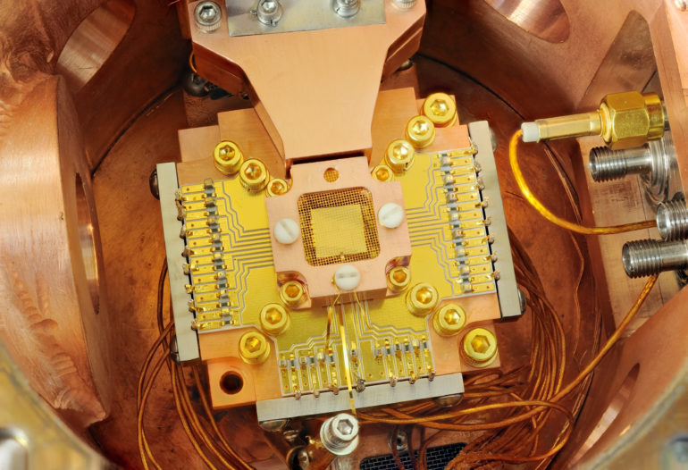

Research
“Nature isn’t classical, dammit, and if you want to make a simulation of nature, you’d better make it quantum mechanical, and by golly it’s a wonderful problem, because it doesn’t look so easy.”
—Richard Feynman
Superconducting circuits:
They use superconducting qubits, to unlock greater potential in quantum computing [1].

“The goal is to build a quantum computing and simulation platform based on superconducting qubits to explore and potentially overcome the limits of classical computation.”
—IBM scientist Stefan Filipp
Futher Work:
- N. Moll, A. Fuhrer, P. Staar, and I. Tavernelli,
“Optimizing qubit resources for quantum chemistry simulations in second quantization on a quantum computer,”
- Reaserch on reducing the overhead required to encode problem to the quantum simulation.
- S. Gasparinetti, S. Berger, A.A. Abdumalikov, M. Pechal, S. Filipp, and A.J. Wallraff,
“Measurement of a vacuum-induced geometric phase,”
- Reaserch to better understand and control specific stated of the quantum processor.
Chemical Simulations:
IBM Q is currently working on simulating Chemistry on Quantum computing since Chemistry is all quantum mechanical, Jerry Chow, manager of experimental quantum computing for IBM Research states that there is no reason to use bits to do it but quantum mechanical objects instead [2].
Areas that may be revolutionized by quantum computing:
- Medicine & Materials
- Untangling the complexity of molecular and chemical interactions leading to the discovery of new medicines and materials.
- Supply Chain & Logistics
- Finding the best solutions for ultra-efficient logistics and global supply chains, such as optimizing fleet operations for deliveries during the holiday season.
- Financial Services
- Finding new ways to model financial data and isolating key global risk factors to make better investments.
- Artificial Intelligence
- Making facets of artificial intelligence such as machine learning much more powerful when data sets are very large, such as in searching images or video.
BIBLIOGRAPHY
[1] IBM Reaserch
[2] Hardware-efficient Variational Quantum Eigensolver for Small Molecules and Quantum Magnets